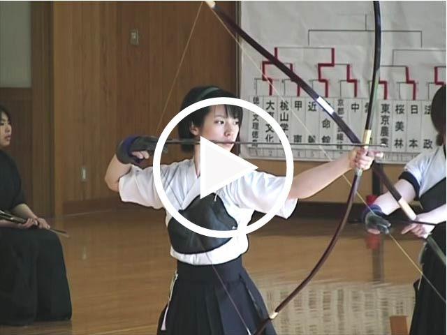

弓道-不動心
出典・脚注
動画URL
・弓道-不動心-：https://www.youtube.com/watch?v=lCKLGMK_3No
・葵祭「流鏑馬神事」：https://www.youtube.com/watch?v=-7vs-ZuIViY
言葉の意味
・「正射必中」・・・正しい姿勢で引いた弓は必ず中る。
・「明鏡止水」・・・邪念がなく、澄み切って落ち着いた心の形容。
・「真・善・美」・・・弓道における最終到達地点を表す言葉。